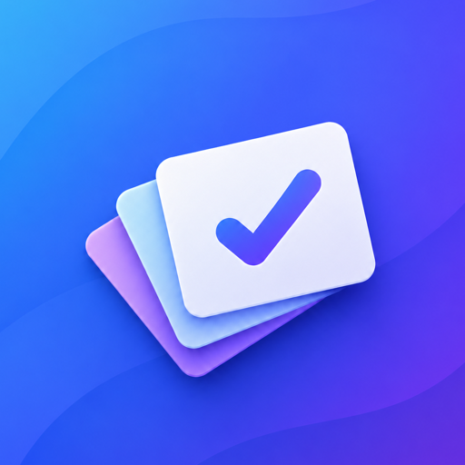

APP–4
2/3
Connect a local agent
As a developer, I want my agent to read and update project stories.

FS User StoriesFast & Simple · Local first · Open source
FS User Stories keeps projects, profiles, stories, acceptance criteria, notes, and attachments on your Mac. No account, no telemetry, no required cloud—and no project-management theater.
As a developer, I want my agent to read and update project stories.
Keep the team aligned without a required service.
SQLite and managed attachments live on your Mac. The app works completely offline.
Three states. Checkable acceptance criteria. One notes field. No sprints, estimates, owners, or dashboards.
Use optional Git synchronization with your own remote. GitHub and GitLab are transports, not dependencies.
The whole product
It only makes clear what needs to be built.
Local MCP for agents
The app exposes a loopback-only MCP endpoint while it is running. Compatible local agents can list projects, search stories, update criteria, manage profiles, and add attachments without sending your workspace to FS User Stories.
FS User Stories
● MCP active
http://127.0.0.1:49231/mcp
Team-testing alpha
Download the DMG, drag FS User Stories to Applications, and open it. The alpha is Developer ID signed, notarized by Apple, and stapled for Gatekeeper.